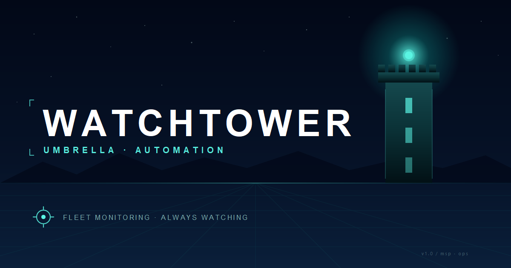

Watchtower · Branding
Watchtower's visual identity: a crenellated tower with a glowing beacon, rendered in Umbrella Automation's deep teal with cyan accents. One mark across the dashboard, browser tab, installer wizard, EXE icon, system tray, intake email, and chat-room notifications. This page is the source of truth for every place that icon shows up.
The mark
Crenellated tower with battlements at the top, white tower body, two arrow-slit windows flanking a glowing cyan beacon, arched door at the base, all enclosed by a deep-teal disc with a soft cyan halo around the beacon.
Designed to read clearly at favicon size (16×16) and scale up to large display use. SVG primary, PNG sizes generated below.
PNG sizes
Rasterized from favicon.svg via scripts/make_icons.py (cairosvg). Re-run that script after any SVG edit and the files below are regenerated in-place.

{kind=link}
{kind=link}
{kind=link}
{kind=link}
{kind=link}
{kind=link}
{kind=link}
Open Graph card
1200×630 social-share image used for link previews on Slack, Discord, Teams, iMessage, X, LinkedIn. Rasterized from og-image.svg via scripts/make_og.py.

{kind=link}
{kind=link}
Color palette
Click any swatch to copy the hex value.
Deep teal #0a6b6b is the primary brand color — tower body silhouette, dashboard accent, button hover. Beacon cyan #5af4e3 is the glow color — ONLY used on the beacon dot + halo + accents. Night sky #050816 is the background for installer wizard art + social cards. White is the tower fill against the deep teal disc.
Inline SVG source
Copy this directly into HTML to render the mark without an HTTP request. Used in index.html (login card + header) and docs.html (header). 64×64 viewBox; scales to any container.
Usage
Do
- Use the SVG version whenever the rendering environment supports it (browser, modern email clients).
- Use a PNG at the exact size the surface needs — e.g. 192px for Google Chat, 64px for tray icons.
- Place on dark backgrounds (#050816 or deep navy) for maximum beacon-glow contrast.
- Keep at least 12% of the mark's diameter as clear-space padding around it.
- Pair with the "Umbrella Automation" meta label above "Watchtower" wherever there's room.
Don't
- Re-tint the mark — the deep teal / cyan combo IS the brand. No purple beacons.
- Crop the disc into a square / outside the 64×64 viewBox. The circular silhouette is part of the recognition.
- Add drop shadows, bevels, or glow effects on top — the inner cyan halo already provides the glow cue.
- Reuse the previous crosshair-style mark anywhere. v0.10.3 retired it.
- Use the og-image as an icon. It's 1200×630 with text baked in — only for social-card previews.